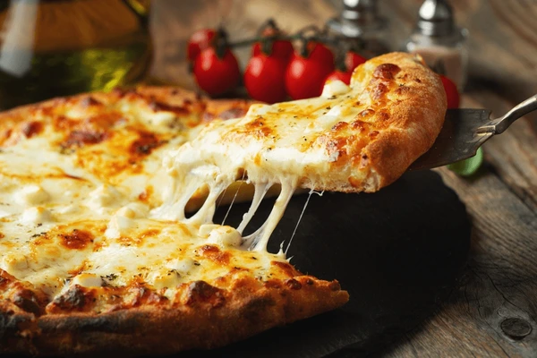

Cheese Pizza

Cheese Pizza is a classic. Whether you enjoyed it from the box in the freezer section as a kid or had a favorite
pizzeria to order from, most of us have a core Cheese Pizza memory.
Ingredients
- Pizza dough
- Pizza sauce
- Cheese
Instructions
-
Preheat oven to 475°.
- Prepare dough according to recipe directions. Grease baking pans. Divide dough into three or four portions
and stretch to fit into pan.
- Spread ½ to ⅔ cup of sauce onto each pizza round. Top with cheese.
- Bake 10 – 12 minutes or until crust is crisp and cheese is gooey and golden.
Home